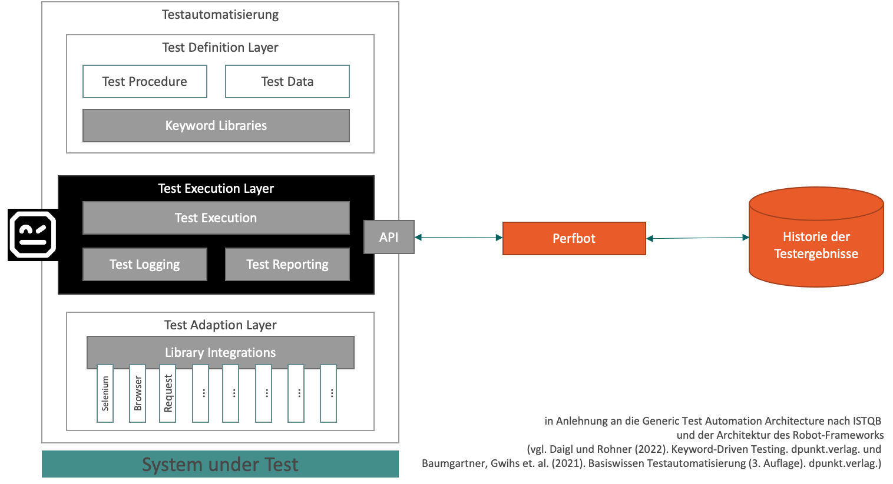
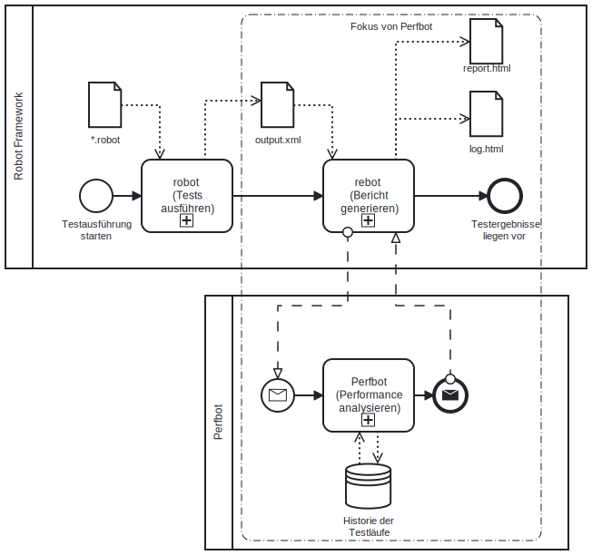

Perfbot ermittelt Performance-Veränderungen anhand von bestehenden automatisierten UI-Tests. Es erweitert dabei das Robot Framework um die Möglichkeit, Test-Laufzeiten in einer Datenbank zu speichern und mit den archivierten Laufzeiten der Vergangenheit zu vergleichen. Das Ergebnisse der Performance-Analyse werden in die Robot-Testresults (log.html / report.html) integriert.
Hier sind die wichtigsten Qualitätsziele beschrieben. Eine detailierte Betrachtung der Qualität erfolgt im Kapitel Qualitätsanforderungen (s. u.).
| ID | Qualitätsziel | Motivation und Erläuterung |
|---|---|---|
| Q1 | Vergleich der Laufzeiten von Robot-Testfällen ermöglichen (Funktionalität) | Die Kernaufgabe des Tool ist es, eine Performance-Analyse zu bieten. |
| Q2 | Integration ins Robot Framework (Kompatibilität) | Das Tool soll ohne Veränderung der bestehenden Robot-Tests genutzt werden können. Die Ergebnisse sollen in die Standard-Ergebnisdokumente integriert werden. |
| Q3 | Performantes Tool ohne Verlangsamung der eigentlichen Testausführung (Performance) | Die Tool soll die Ausführung der Tests nicht verlangsamen, auch um keine Seiteneffekte auf die Messung zu haben. Auch das Tool selbst soll performant sein z. B. nicht zu viele Datenbankzugriffe tätigen. |
| Rolle | Erwartungshaltung |
|---|---|
| Testautomatisierer | möchte Hinweise zur Performance der Testfälle bzw. über Performance-Veränderungen des Testobjektes; erwaret eine einfache Integration in sein bisheriges Robot-Setup |
| Entwicklungsteam | möchte Performance-Probleme frühzeit entdecken; erhofft sich detailierte Infos an welcher Komponente die Performance schlechter ist |
| Anwendungsverantwortlicher (Auftraggeber) | möchte frühzeit über Performance-Probleme in Kenntnis gesetzt werden; möchte Nachweis über Performance des Anwendung |
| Testmanagement / TA-Team | möchte das Qualitätsziel "Performance" im Unternehmen stärker in den Fokus setzen; möchte mit reduziertem Aufwand die funktionalen Tests um nicht-funktionale Kennzahlen erweitern |
| Forscher (Masterarbeit) | möchte beurteilen, ob Kennzahlen zu bestehender UI-Tests brauchbar sind, um Aussagen über die Performance eines Testobjekts zu treffen |
Hinweis: Da die Funktionalität dieses Werkzeugs selbst für den Softwaretest genutzt werden soll, ist eine Abgrenzung zwischen fachlichen und technischen Kontext an dieser Stelle schwierig.
Was bietet das Tool?
Wohin bestehen Schnittstellen?
robot bzw. Testberichtgenierungs-Werkzeug rebotWas bietet das Tool nicht?
Das Tool Perfbot (orange) integriert sich auf der Testausführungsschicht (schwarz) in das Robot Framework und nutzt dabei die Schnittstelle (API) des Frameworks.

Die grundlegende Lösungsidee zur Performance-Anaylse unter Nutzung bestehender UI-Tests ist folgende: Eine generische Erweiterung des im Unternehmen verbreiteten Testautomatisierungswerkzeugs Robot Frameworks zu schaffen. Dadurch sollen Synergieeefekte durch Nutzung bestehender Testfälle und dem bestehenden Knowhow der Testautomatisierer gehoben werden. Konkret liegt beim Performance-Vergleich folgende Umsetzungsidee vor:
log.html / report.html)Die Performance-Analyse soll durch die drei folgenden wichtigsten Funktionen erfolgen: - Vergleichskennzahlen: Tabellarische Darstellung verschiedene Kennzahlen (Minimum, Maximum, Durchschnitt, Abweichung vom Durchschnitt) zur früheren Laufzeiten - Box-Plot: grafische Aufbereitung der Laufzeiten der Vergangenheit zu jedem Testfall - Testbreaker: Testfälle werden als fehlerhaft makiert, wenn ein Schwellwert zu Abweichung von vergangen Test-Laufzeiten überschritten wird.
Die Integration in das Robot Framework ist die wesentliche Technologieentscheidung, dadruch kann die bestehende API des Robot Frameworks genutzt werden. Gleichzeitig schafft dies auch eine klare Abhängigkeit zum Framework und gewisse Technologievorgaben z. B. die Nutzung von Python als Programmiersprache sind damit vorbestimmt.
Siehe auch High-Level-Architektur unter "Technischer Kontext"
Begründung für diese Darstellungsweise
Das Komponentendiagramm fasst die wesentlichen Komponenten zusammen.
Enthaltene Bausteine
| Bastein | Erläuterung |
|---|---|
| perfbot | Perfbot Python-Modul als Blackbox |
Wichtige Schnittstellen
| Schnittstelle | Erläuterung |
|---|---|
| Datenbank (hier Sqlite3) | Für die Speicherung der Testläufe wird eine Datenbank genutzt. Hier wird beispielsweise eine Sqlite3-DB unterstützt. |
| Robot Framework API | Die Ausführung des Perfbots wird durch die API des Robot Frameworks getriggert. |
Begründung für diese Darstellungsweise
Das Klassendiagramm gibt einen detailierten Überblick über die Klassen und damit über die dannach gegliederten Quellcode-Dateien.
Enthaltene Bausteine
| Bastein | Erläuterung |
|---|---|
| ResultVisitor | Teil der Robot-API; ermöglicht das Iterieren über die Testergebnisse vor der Report-Geneneriung |
| perfbot | Wrapper, damit der Aufruf mit dem Parameter --prerebotmodifier perfbot/perfbot.py aufgerufen werden kann. Eigentliche Logik siehe PerfEvalResultModifier. |
| PerfEvalResultModifier | übernimmt die eigentliche Verarbeitungslogik des Perfbots nach dem Aufruf durch rebot. |
| PerfEvalVisualizer | übernimmt die visuelle Aufbereitung z. B. in Box-Plots von Performanzdaten der Testfälle. |
| PersistenceService | Abstrakte Klasse, um die eigentliche Implementierung, wie die Testlaufergebnisse gespeichert bzw. abgerufen werden zu verschleiern. |
| Sqlite3PersistenceService | Konkrete Persistierung der Testergebnisse in einer lokalen Sqlite3-Datei. |

Begründung für diese Darstellungsweise
Gibt einen Überblick, wie Perfbot sich in die Kernfunktionen, die das Robot Framework bereitstellt, integriert.
Begründung für diese Darstellungsweise
Zeigt den zeitlichen Ablauf und die Triggerpunkte, wo die verschiedenen Perfbot-Funktionen aufgerufen werden.
An dieser Stelle sind die wichtigsten Arhcitektureintscheidungen aufgelistet:
| ID | Zusammenfassung | Erläuterung/Begründung |
|---|---|---|
| ADR1 | Integration in rebot-Schritt | Durch die Anbindung in den Rebot-Schritt erfolgt die Ausführung von Perfbot nachgelagert zur Testausführung. Dadruch werden Seiteneffekte (Verlangsamung oder Fehler) auf die eigentliche TA vermieden. Ein Nachteil ist jedoch, dass damit Erkenntnisse des Testbreakers nicht auf der CLI oder in der output.xml berücksichtigt werden. Alternativ kann jedoch mit rebotauch eine neue aktualisierte output.xmlerzeugt werden. |
| ADR2 | Integration in die Robot-Reports | Durch die Integration in die report.htmlund log.html werden dem Testautomatisierer die Performance-Analyse in die bekannten Ergebnisdateien angezeigt. Er muss keine weiteren Dateien betrachten. Der Gestaltungsfreiraum innerhalb dieser Dokumente ist jedoch dabei etwas beschränkt z. B. können Metadaten-Informationen nur an die Testsuite und nicht an Testfälle gehangen werden. Zudem muss auf den vorhandenen Teststatus-Vorrat (PASS, FAIL, SKIP) für den Testbreaker zurückgegriffen werden. |
| ADR3 | Eigene DB statt TestArchiver | Der TestArchiver bietet ein umfassendes Schema für die Speicherung von Testergebnissen inkl. der automatischen Persisitierung durch einen eigenen Listener. Beim Test dieser Tools musste jedoch festgestellt werden, dass die entscheidenen Tabelle mit den Ergebnissen der Testfälle nicht gefüllt werden. Deshalb wurde für den MVP eine eigenen DB aufgesetzt. Abhängig von den Erweiterungsoptionen sollte jedoch die Nutzung des TestArchivers (z. B. durch einen Fork) geprüft werden. |
| ADR4 | Sqlite3 als erste Persistierung | Für den MVP-Ansatz wurde das Datei-Datenbanksystem Sqlite3 ausgewählt, da es schnell einzurichten ist und das notwendige Python-Modul bereits im Python-Standard-Paket inkludiert ist. Die Erweiterung auf ein "echtes" DBMS wird angestrebt und sollte druch die erweitere Schnittstellendesign problemlos möglich sein. |
Im der folgenden Grafik - dem sogenannten Qualitätsbaum (englisch: Utitlty Tree) - werden den Qualitätsmerkmalen den die Qualitätsziele (Qx) aus dem ersten Kapitel und die unten beschriebenen Qualitätsszenarien zugeordnet (Mehrfachnennung möglich).
Konkrete Szenarien werden entweder als Nutzungs-/Anwendungsfall oder als Änderungsszenario, was passiert mit der Qualität bei Weiterentwicklung, angegeben. Die Anfangsbuchstabe der ID soll die Zuorndung zum (am besten passenden) Qualitätsmerkmale verdeutlichen.
| ID | Szenario |
|---|---|
| F1 | Jeder Testausführung wird für die spätere Performance-Analyse archiviert. |
| F2 | Die Funktion des Testbreaker lässt sich zeigen, wenn beispielweise ein Sleep in einen Testfall eingebaut wird. |
| F3 | Die verschiedenen Testläufe eines Testfalls werden im Box-Plot dargestellt. |
| F4 | Die prozentuale Abweichung vom Durchschnitt zu den vergangen Testläufen wird angezeigt. |
| B1 | Der Testautomatisierer möchte das Tool ohne umfangreiche Kenntnisse in seinen Testausführungs-CLI-Befehl integrieren. |
| B2 | Der Testautomatisierer erwartet die Performance-Analyse in den gewohnten Ergebnisdateien. |
| K1 | Das Tool stellt keine Anfoderungen oder Änderungen an die beschriebene Testspezifikation (*.robot). |
| Z1 | Fehler im Perfbot gefährden nicht die eigentliche Testdurchführung z. B. sollen keine Ergebnisse einer langlaufenden Testsuite aufgrund eines Fehlers im Tool verloren gehen. |
| W1 | Ein Entwickler erwartete eine gute Dokumentation und Struktur des Quellcodes bzw. Repos. |
| W2 | Der Entwickler erwartet vorhandene Regressionstests und die Nutzung von statischer Codeanalyse. |
| Ü1 | Das Tool soll auf einem bestehenden System mit Python/PiP installieren. |
| Ü2 | Der Tool soll nicht auf die Testfälle eines Unternehmens beschränkt sein. |
| Ü3 | Das Tool ist um andere Persistierungmöglichkeiten z. B. das DBMS MongoDB erweiterbar. |
| Ü4 | Die Performance-Analyse kann auch auf Schlüsselwörter (oder andere Objekte) erweitert werden. |
Kernrisiko ist, dass die Lösungsidee bzw. die Prämisse nicht trägt. D. h. dass sich bestehende UI-Tests nicht eignen, um Aussagen über die Performance des Testobjektes zu treffen. Dem Gegenüber steht jedoch die Chance, dass die Lösungsidee trägt. Zudem ist die Überprüfung der Prämisse durch die Entwicklung des Perfbots Teil der Forschungsfrage der Masterthesis.
Die technischen Schulden der jeweiligen Entscheidungen sind bei den Architekturentscheidungen als Nachteile formuliert (s. o.).
| Begriff | Definition |
|---|---|
| -/- | -/- |